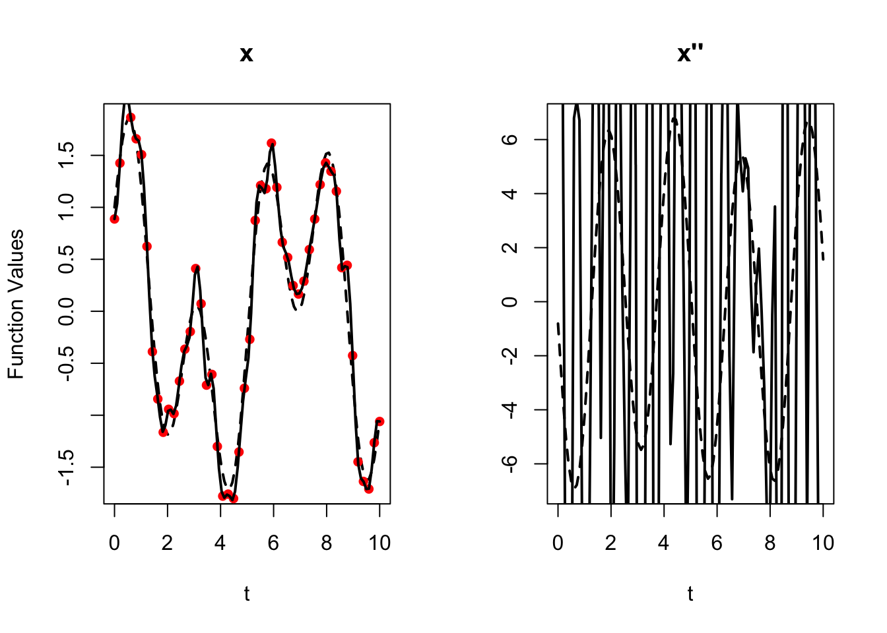
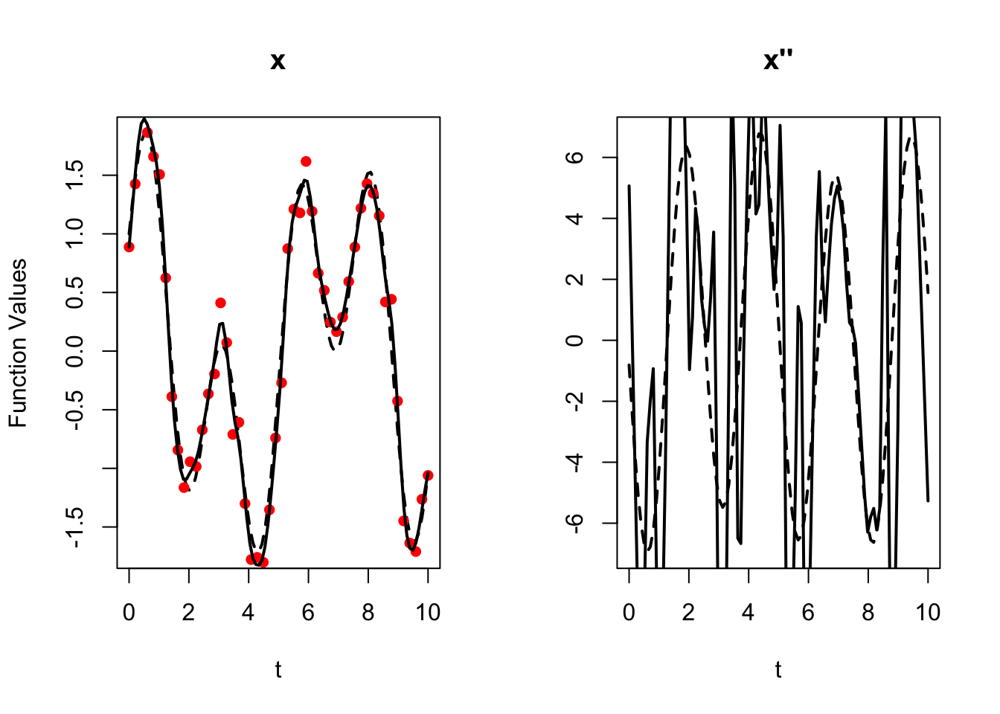
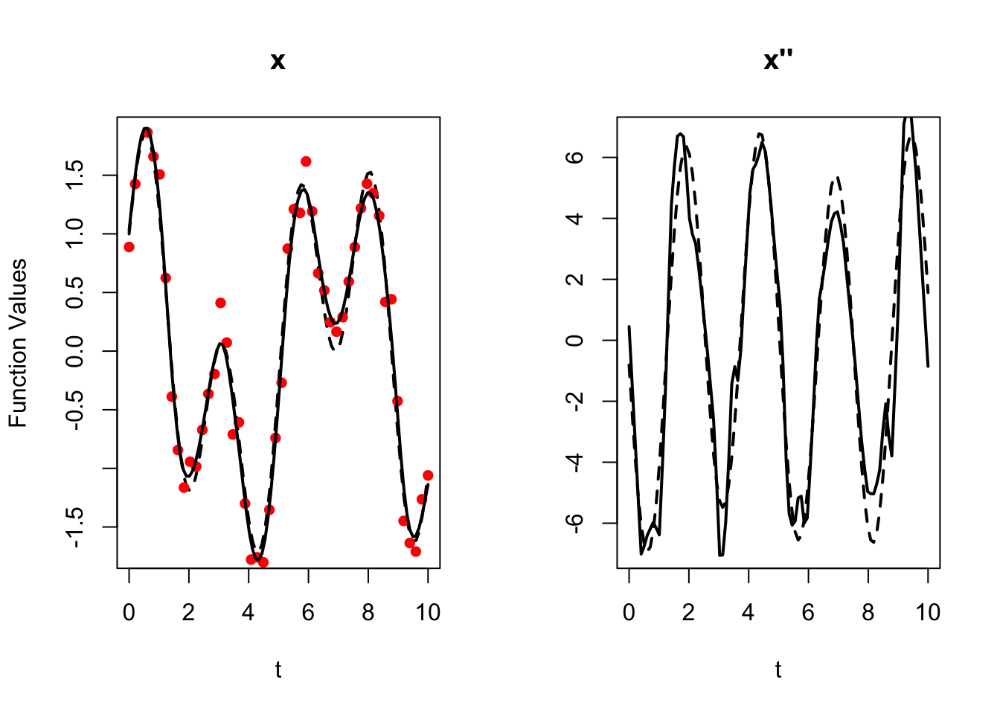
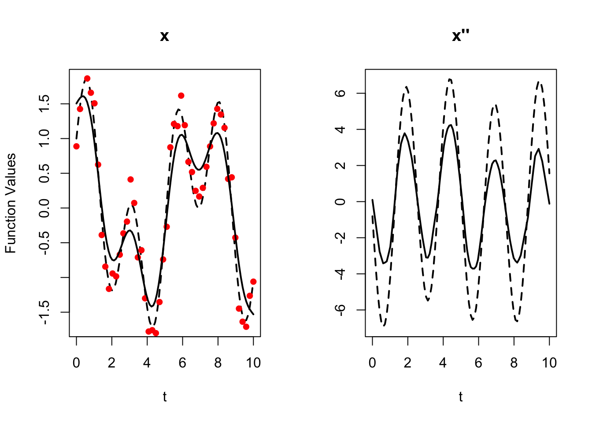
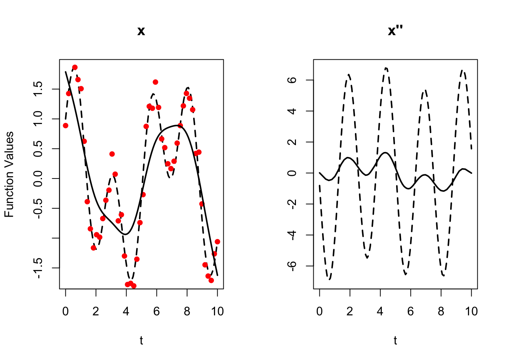
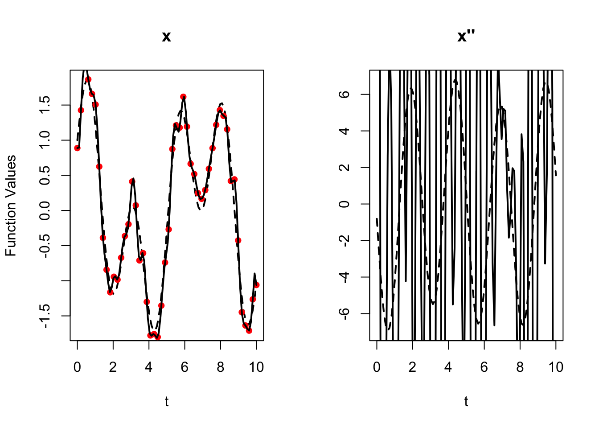
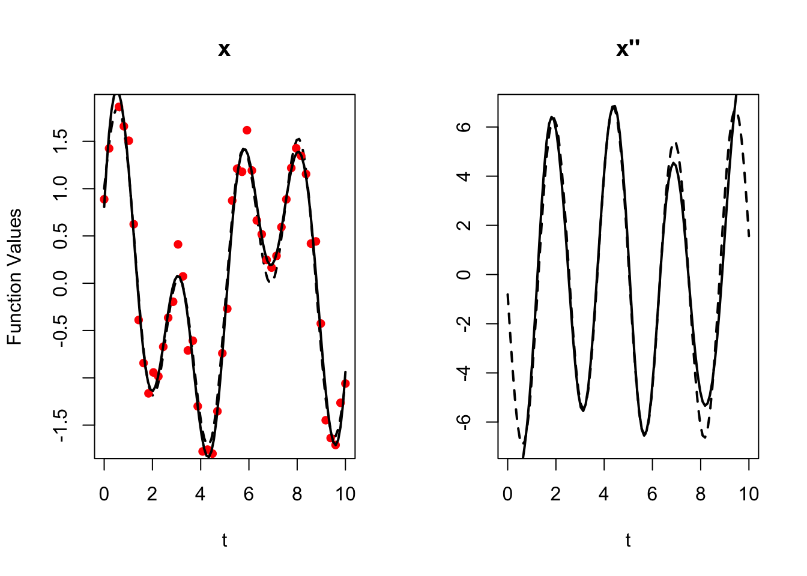
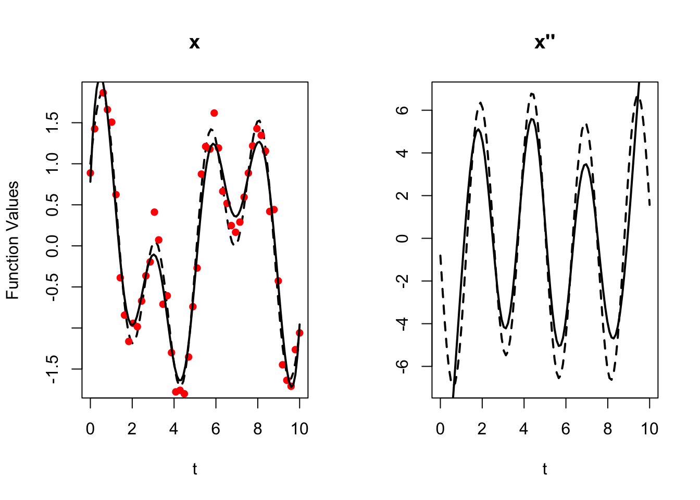
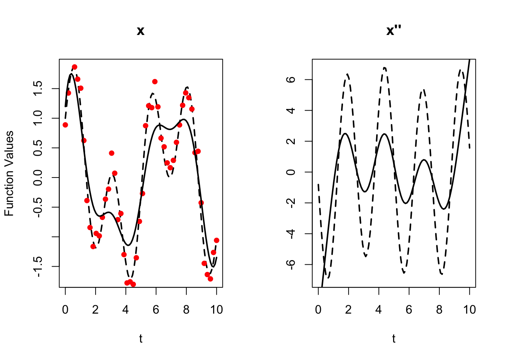
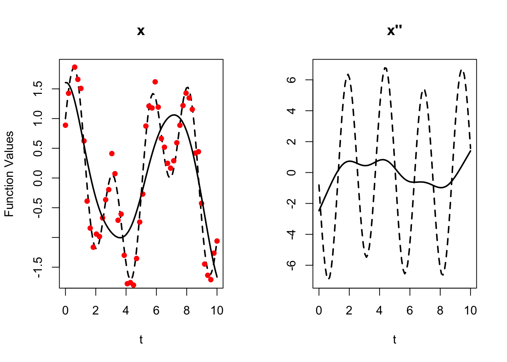

Last updated: 2025-07-28
Checks: 7 0
Knit directory: FDA_reading/
This reproducible R Markdown analysis was created with workflowr (version 1.7.1). The Checks tab describes the reproducibility checks that were applied when the results were created. The Past versions tab lists the development history.
Great! Since the R Markdown file has been committed to the Git repository, you know the exact version of the code that produced these results.
Great job! The global environment was empty. Objects defined in the global environment can affect the analysis in your R Markdown file in unknown ways. For reproduciblity it’s best to always run the code in an empty environment.
The command set.seed(20250713) was run prior to running
the code in the R Markdown file. Setting a seed ensures that any results
that rely on randomness, e.g. subsampling or permutations, are
reproducible.
Great job! Recording the operating system, R version, and package versions is critical for reproducibility.
Nice! There were no cached chunks for this analysis, so you can be confident that you successfully produced the results during this run.
Great job! Using relative paths to the files within your workflowr project makes it easier to run your code on other machines.
Great! You are using Git for version control. Tracking code development and connecting the code version to the results is critical for reproducibility.
The results in this page were generated with repository version e55081d. See the Past versions tab to see a history of the changes made to the R Markdown and HTML files.
Note that you need to be careful to ensure that all relevant files for
the analysis have been committed to Git prior to generating the results
(you can use wflow_publish or
wflow_git_commit). workflowr only checks the R Markdown
file, but you know if there are other scripts or data files that it
depends on. Below is the status of the Git repository when the results
were generated:
Ignored files:
Ignored: .Rhistory
Ignored: .Rproj.user/
Untracked files:
Untracked: analysis/fft.Rmd
Unstaged changes:
Modified: FDA_reading.Rproj
Note that any generated files, e.g. HTML, png, CSS, etc., are not included in this status report because it is ok for generated content to have uncommitted changes.
These are the previous versions of the repository in which changes were
made to the R Markdown (analysis/chapter5.Rmd) and HTML
(docs/chapter5.html) files. If you’ve configured a remote
Git repository (see ?wflow_git_remote), click on the
hyperlinks in the table below to view the files as they were in that
past version.
| File | Version | Author | Date | Message |
|---|---|---|---|---|
| Rmd | e55081d | Karl Tayeb | 2025-07-28 | wflow_git_commit("analysis/chapter5.Rmd") |
This chapter is concerned with roughness penalized smoothing.
In section 5.2 the roughness penalty is introduced in the context of penalizing spline smoothing (although the ideas are more broadly applicable to basis expansions that yield suitably differentiable functions). The idea is to place a penalty on the norm of the derivative (5.2.2). \(\text{PEN}_2(x) = \int [D^2 x(s)]^2 ds = ||D^2x||^2\) (5.2.2). Although, importantly, it turns out that e.g. the optimal twice differentiable function estimated using the roughness penalty is a cubic spline (5.2.4). The linear algebra for computing spline smooths and penalized spline smooths is reviewed (5.2.5). And attention is drawn to the fact that spline smoothing is linear in the observations \({\bf y}\) This allows us to compute degrees of freedom (5.2.6). The penalized least squares problem is related to a data-augmented least squared, which offers some numerical advantage (5.2.7). Finally, derivative estimation is discussed (5.2.8)
In section 5.3, extentions and modifications of the basic roughness penalized spline smoothing are discussed such as reducing the number of knots/basis functions (5.3.1), replacing the data fit with a negtive log-likelihood or some other measure of data fit (5.3.2), or developing, and even estimating more general roughness penalties of the form \(Lx = \sum_{k=0}^m w_k D^k x\) (5.3.3). Some considertion is given to the details of computing/approximating the penalty matrix \(R\) (5.3.4).
Section 5.4 is concerned with choosing the smoothing parameter \(\lambda\). First, a dimensional analysis and some rules of for practical settings of \(\lambda\) are discussed. This leads to a “dimensionless” reparameterization of the roughness penalty criterion is provided (5.4.1). Leave-one-out cross validation (5.4.2) and generalized cross validation are discussed, as well as strategies for efficient optimization of the generalized cross validation criterion (5.4.3). These concepts are explored in their application to simulated growth data (5.4.4).
Section 5.5 discusses computing point-wise confidence intervals for function values, and sets this in the more general setting of functional probes. Linear functional probes are introduced as a means of interrogating features of a function. The evaluation map is introduced as a specific linear probe (5.5.1). For linear smooths of the data, the sampling behavior of linear probes can be studied by composing maps from data to basis coefficients, and coefficients to probe evaluation (5.5.2). These computations are carried out in more detail for the evaluation map (5.5.3) These confidence limits are applied to acceleration of the growth data (5.5.4).
Section 5.6 proposed penalizing a subset of the basis functions. The notion of complimentary bases is introduced, splitting \(x = x_S + x_R\) where \(x_S\) and \(x_R\) are “smooth” and “rough” parts of the function each with their own basis (5.6.1). Some options for roughness penalties on \(x_R\) are discusse, as well as the linear algebra for estimating coefficients in the complementary bases (5.6.2). Som preperties of the estimates are discussed (5.6.3).
Section numbers correspond with those in the book, but their names vary based on what I was emphasizing. Notation also varies slightly from the book, mostly in the direction of making more explicit which basis, penalty, etc, are being used (e.g. writing \(\hat {\bf c}_{\phi, \lambda, 2}\) instead of just \(\hat{\bf c}\).
The term “spline smoothing”, for the purposes of this book, is reserved for fitting splines with roughness penalties as described here, rather than fitting by least squares.
For \(x\) twice differentiable, with integrable second derivative
\[ \text{PEN}_2(x) = \int [D^2 x(s)]^2 ds = ||D^2x||^2 \] If the curvature is large in some part of \(x\), \(\text{PEN}_2\) will be large.
more generall we can have a roughness penalty
\[ \text{PEN}_m(x) = \int [D^m x(s)]^2 ds = ||D^m x||^2 \]
\[ \text{PENSSE}_\lambda (x | {\bf y}) = [y - x({\bf t})]^T W[y-x({\bf t})] + \lambda \int [D^2 x(s)]^2 ds \]
Let \(\mathcal D_2\) be the set of twice differentiable functions.
\[ x^* = \arg\min_{x \in \mathcal D_2} \text{PENSSE}_\lambda(x | {\bf y}) \] Theorem (de Boor, 2002): \({\bf t} = (t_1, \dots, t_n)\) distinct, then \(x^*\) is a cubic spline with knots at \({\bf t}\).
Smoothing splines adapt naturally to unequally spaced points. Where data sampling is high you get more flexibility.
The canonical version of spline smoothing: order 4 \(B\)-spline basis expansion with knots at the sampling points, minimizing \(\text{PENSSE}_\lambda\).
Recall that minimizing \(\text{SSE}\) in the basis expansion
\[ x(t) = \langle {\bf c}, {\mathbf{\phi}}(t)\rangle \]
The estimated coefficients are
\[ \hat c = (\Phi^T W \Phi)^{-1} \Phi^TW^T{\bf y}. \]
The smoothed estimates are linear in \({\bf y}\):
\[ \hat{\bf y} = S_\phi {\bf y}, \;\; S_\phi = \Phi(\Phi^T W \Phi)^{-1} \Phi^T W^T. \]
We rewrite the roughness penalty in terms of the coefficients \({\bf c}\) in the basis expansion. The key here is that the penalty is quadratic in \({\bf c}\)
\[ \begin{aligned} \text{PEN}_m(x) &= \int [D^m x(s)]^2 ds \\ &= \int [D^m \langle {\bf c}, \phi(s) \rangle]^2 ds \\ &= \int [\langle {\bf c}, D^m \phi(s) \rangle]^2 ds \\ &= \int {\bf c}^T D^m \phi(s)D^m \phi^T(s) {\bf c} ds \\ &= {\bf c}^T \left[\int D^m \phi(s)D^m \phi^T(s) ds \right] {\bf c} \\ &= {\bf c^T} R_m {\bf c}. \end{aligned} \]
\[ \text{PENSSE}_m({\bf c} | {\bf y}) = ({\bf y} - \Phi {\bf c})^T W ({\bf y} - \Phi {\bf c}) + \lambda {\bf c}^T R_m {\bf c} \]
Taking the derivative and solving for stationary points we obtain
\[ \hat{\bf c}_{\phi, \lambda} = (\Phi^T W \Phi + \lambda R)^{-1} \Phi^T W {\bf y}, \]
where \(R = R_2\).
As before the smoothed estimates are linear in \({\bf y}\)
\[ \begin{aligned} \hat {\bf y}_\lambda &= \Phi \hat c_{\phi, \lambda} \\ &= (\Phi^T W \Phi + \lambda R)^{-1} \Phi^T W {\bf y} \\ &= S_{\phi, \lambda} {\bf y} \end{aligned} \]
Note that unlike before, \(S_{\phi, \lambda}\) is no longer a projection matrix, as the least squares smooth \(S_\phi = S_{\phi, 0}\) is.
We can take the second derivatives of the basis functions and arrange them in a matrix \(\Phi^{(2)}\), then the estimates of the second derivatives are also linear in \({\bf y}\):
\[ \hat {\bf y}^{(2)}_\lambda = \Phi^{(2)} \hat {\bf c}_{\phi, \lambda} = S_{\phi, \lambda}^{(2)}{\bf y}. \]
\[ \text{df}(\lambda) = \text{trace} S_{\phi, \lambda} \]
Note: \(\lambda \rightarrow 0\) yields the minimum norm
In ridge regression and other regularized regression settings, the penalty or prior can be conceptualized as adding “dummy data” to the model. In this context, the dummy observations are set to zero, and the influence of these observations is controlled by the penalty parameter . This is reflected in the augmented matrices:
\[ \tilde {\bf y} = \begin{bmatrix}{\bf y} \\ 0\end{bmatrix}, \tilde \Phi = \begin{bmatrix}\Phi \\ \sqrt{\lambda} L\end{bmatrix}, \tilde W = \begin{bmatrix}W & 0 \\ 0 & I_K\end{bmatrix} \]
where \(R = L^T L\). Then, minimizng least squares in the augmented problem is equivalent to minimizing \({\bf c}\) in our penalized problem.
\[ \arg\min_c \text{SSE}(\tilde {\bf y} | {\bf c}) = \arg\min_c \text{PENSSE}_\lambda ({\bf y} | {\bf c}) \] Solving the augmented least squares problem via QR decomposition introduces less rounding error than direct optimization of the penalized criterion.
If we want to estimate order \(m\) derivatives, we should penalize \(||D^{m+2} x||^2\), to control the curvatures of the highest order derivative.
Using order 5 \(B\)-splines, we can compare the least squares estimate the the
library(fda)Loading required package: splinesLoading required package: fdsLoading required package: rainbowLoading required package: MASSLoading required package: pcaPPLoading required package: RCurlLoading required package: deSolve
Attaching package: 'fda'The following object is masked from 'package:graphics':
matplot# True function, acceleration
x_fun <- function(x) sin(2.5 * x) + cos(0.9 * x)
x_accel <- function(x) -(sin(2.5 * x) * 2.5**2 + cos(0.9 * x) * 0.9**2)
# Simulate n data from the regression model
simulate_data <- function(n, sigma = 0.2, seed = 123) {
set.seed(seed)
t <- seq(0, 10, length.out = n)
y <- x_fun(t) + rnorm(n, 0, sigma)
data.frame(t = t, y = y)
}
data <- simulate_data(50)
# select observations to be knots according to strategy p98
# to make number of basis functions equal number of sample points
get_knots <- function(t, order){
# drop order - 2 knots from the end
# e.g. for order = 4, drop two points
# (t1, t2, ... ,t_n-1, t_n) -> (t1, t3, ..., t_n-2, t_n)
num_to_drop <- order - 2
# Create a sequence of indices to keep
indices_to_keep <- c(1, seq(ceiling(num_to_drop/2) + 2, length(t) - floor(num_to_drop/2) - 1), length(t))
return(t[indices_to_keep])
}
plot_x_and_acceleration <- function(norder, lambda, m){
# compute basis
basis <- create.bspline.basis(
rangeval = range(data$t),
breaks = get_knots(data$t, norder),
norder = norder
)
# compute coefficients
R <- bsplinepen(basis, Lfdobj = m)
Phi <- bsplineS(data$t, get_knots(data$t, norder), norder=norder)
hatc <- solve(t(Phi) %*% Phi + lambda * R, t(Phi) %*% data$y)
# compute
t2 <- seq(min(data$t), max(data$t), length.out=100)
S <- bsplineS(t2, get_knots(data$t, norder), norder=norder)
smoothed_values <- S %*% hatc
S2 <- bsplineS(t2, get_knots(data$t, norder), norder=norder, nderiv = 2)
smoothed_accel <- S2 %*% hatc
par(mfrow=c(1,2))
# Plot the true function
plot(t2, x_fun(t2), type = "l", lty = 2, col = "black", lwd = 2,
xlab = "t", ylab = "Function Values", main = "x")
# Add the observed values
points(data$t, data$y, col = "red", pch = 16)
# Add the estimated function
lines(t2, smoothed_values, col = "black", lwd = 2)
# Plot for acceleration (assuming 'x_accel(t2)' and 'smoothed_accel' are defined)
# Example acceleration data (replace with your actual data)
x_accel_t2 <- x_accel(t2) # Example true acceleration
# Plot the true acceleration
plot(t2, x_accel_t2, type = "l", lty = 2, col = "black", lwd = 2,
xlab = "t", ylab="", main = "x''")
# Add the estimated acceleration
lines(t2, smoothed_accel, col = "black", lwd = 2)
}Here we look at order \(4\) B-splines with a \(||D^2x||^2\) penalty, at different settings of the penalty parameter ranging from under-smoothing to over smoothing. Note here that this penalty does not control the smoothness of \(x''\).
plot_x_and_acceleration(
norder = 4, # order of B-splines
lambda <- 0, # roughness penalty
m = 2 # roughness order
)
plot_x_and_acceleration(
norder = 4, # order of B-splines
lambda <- 0.001, # roughness penalty
m = 2 # roughness order
)
plot_x_and_acceleration(
norder = 4, # order of B-splines
lambda <- 0.01, # roughness penalty
m = 2 # roughness order
)
plot_x_and_acceleration(
norder = 4, # order of B-splines
lambda <- 0.1, # roughness penalty
m = 2 # roughness order
)
plot_x_and_acceleration(
norder = 4, # order of B-splines
lambda <- 1, # roughness penalty
m = 2 # roughness order
)
Next we look at order \(6\) B-splines with a \(||D^4x||^2\) penalty, at different settings of the penalty parameter ranging from under-smoothing to over smoothing. Note here that this penalty does not control the smoothness of \(x''\).
plot_x_and_acceleration(
norder = 6, # order of B-splines
lambda <- 0., # roughness penalty
m = 4 # roughness order
)
plot_x_and_acceleration(
norder = 6, # order of B-splines
lambda <- 0.0001, # roughness penalty
m = 4 # roughness order
)
plot_x_and_acceleration(
norder = 6, # order of B-splines
lambda <- 0.001, # roughness penalty
m = 4 # roughness order
)
plot_x_and_acceleration(
norder = 6, # order of B-splines
lambda <- 0.01, # roughness penalty
m = 4 # roughness order
)
plot_x_and_acceleration(
norder = 6, # order of B-splines
lambda <- 0.1, # roughness penalty
m = 4 # roughness order
)
\[ M(\lambda) = \Phi^T W \Phi + \lambda R \] The size of the elements of \(\Phi^T W \Phi\) and \(R\) may be of radically different sizes.
\[ ||R|| = \sqrt{\sum_{k, l} r_{kl}^2} \] increases roughly an order of magnitude in \(m\) (the order of the roughness penalty)
\(R\) is rank \(K-m\). If \(\lambda\) is too large it will overwhelm the contribution of \(\Phi^T W \Phi\). \(\lambda R\) should not be more than \(10^10\) times the size of \(\Phi^T W \Phi\).
Making the objective scale invariant. \[ \text{PENSSE}(x) = \frac{1}{n} ||{\bf y} - \hat {\bf y}||^2 + 10^\nu T^{2m-1} \text{PEN}_m(x) \] - divide by \(n\) to allow for scaling of the sample size - \(\nu = \log_{10} \lambda\) - \(D^m x\) has units \(u^m/t^m\). So its inner product is \(u^{2m}/t^{2m}\). After integration, \((u/t)^{2m-1}\), hence, \(T^{2m-1}\) - \(T\) is the length of the inverval. (2.3 second, 2300 milliseconds)
\[ \text{GCV}(\lambda) = \frac{n^{-1} \text{SSE}}{[n^{-1} \text{trace}(I - S_{\phi, \lambda})]^2} = \frac{n}{n - \text{df}(\lambda)} \times \frac{\text{SSE}}{n - \text{df}(\lambda)} \]
\[ \text{SSE} = ||Y - \hat Y||^2 = ||Y(I - S_{\phi, \lambda})||^2 = \text{trace}(Y^T[I - S_{\phi, \lambda}]^{2} Y) \]
\[ S_{\phi, \lambda} = \Phi M(\lambda)^{-1} \Phi^T W, \;\; M(\lambda) = \Phi^T W \Phi + \lambda R \]
Generalized eigenvalue problem.
\[
RV = \Phi^T W \Phi V D
\] \(D\) is the diagonal matrix
of eigenvalues of \(R\) in the metric
defied by \(\Phi^TW \Phi\) and \(V\). The columns of \(V\) are eigenvectors of \(R\) satisfying the orthogonality
condition
\[ V^T \Phi^T W \Phi V = I \]
We’ll write \(K = \Phi^T W \Phi\) since we’ve needed it so much
Regular eigenvalue problem \[ RV = VD, \quad \langle V, V \rangle = I \implies V^T R V = D \] Generalized eigenvalue problem \[ RV = KVD, \quad \langle V, V \rangle_K = I \implies V^T R V = D \]
The generalized eigenvalue problem has a solution only if \(K\) is non-singular. de Boor suggests dropping knots at the boundary until the number of basis functions equals the number of sampling points.
Ex. cubic smoothing splines (order 4) and 101 sampling points. Then there are 103 basis functions. We can drop knots associated with \(i=2, 100\) to get to \(101\) basis function.
\[ M(\lambda)^{-1} = V(I + \lambda D)^{-1} V^T \] which can substantially decrease computation.
Gradients of the \(\text{GCV}\) criterion can also be computed efficiently leveraging the generalized eigendecomposition.
sessionInfo()R version 4.4.3 (2025-02-28)
Platform: aarch64-apple-darwin23.6.0
Running under: macOS Sonoma 14.6
Matrix products: default
BLAS: /opt/homebrew/Cellar/openblas/0.3.29/lib/libopenblasp-r0.3.29.dylib
LAPACK: /opt/homebrew/Cellar/r/4.4.3/lib/R/lib/libRlapack.dylib; LAPACK version 3.12.0
locale:
[1] en_US.UTF-8/en_US.UTF-8/en_US.UTF-8/C/en_US.UTF-8/en_US.UTF-8
time zone: America/Chicago
tzcode source: internal
attached base packages:
[1] splines stats graphics grDevices utils datasets methods
[8] base
other attached packages:
[1] fda_6.3.0 deSolve_1.40 fds_1.8 RCurl_1.98-1.16
[5] rainbow_3.8 pcaPP_2.0-5 MASS_7.3-64 workflowr_1.7.1
loaded via a namespace (and not attached):
[1] ks_1.15.1 sass_0.4.9 bitops_1.0-9 KernSmooth_2.23-26
[5] stringi_1.8.7 lattice_0.22-6 hdrcde_3.4 pracma_2.4.4
[9] digest_0.6.37 magrittr_2.0.3 evaluate_1.0.3 grid_4.4.3
[13] mvtnorm_1.3-3 fastmap_1.2.0 rprojroot_2.0.4 jsonlite_2.0.0
[17] Matrix_1.7-2 processx_3.8.6 whisker_0.4.1 mclust_6.1.1
[21] ps_1.9.0 promises_1.3.2 httr_1.4.7 jquerylib_0.1.4
[25] cli_3.6.4 rlang_1.1.5 cachem_1.1.0 yaml_2.3.10
[29] tools_4.4.3 colorspace_2.1-1 httpuv_1.6.15 vctrs_0.6.5
[33] R6_2.6.1 lifecycle_1.0.4 git2r_0.36.2 stringr_1.5.1
[37] fs_1.6.5 cluster_2.1.8 pkgconfig_2.0.3 callr_3.7.6
[41] pillar_1.10.1 bslib_0.9.0 later_1.4.1 glue_1.8.0
[45] Rcpp_1.0.14 xfun_0.51 tibble_3.2.1 rstudioapi_0.17.1
[49] knitr_1.50 htmltools_0.5.8.1 rmarkdown_2.29 compiler_4.4.3
[53] getPass_0.2-4